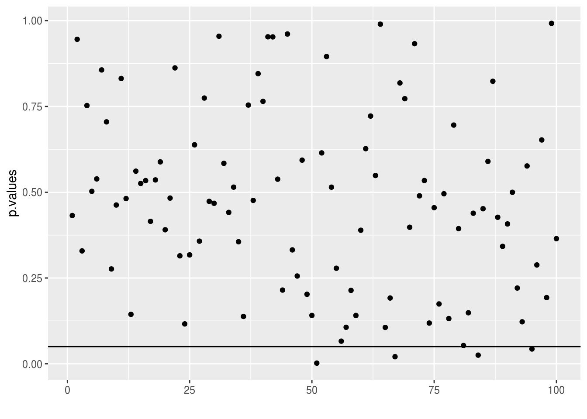
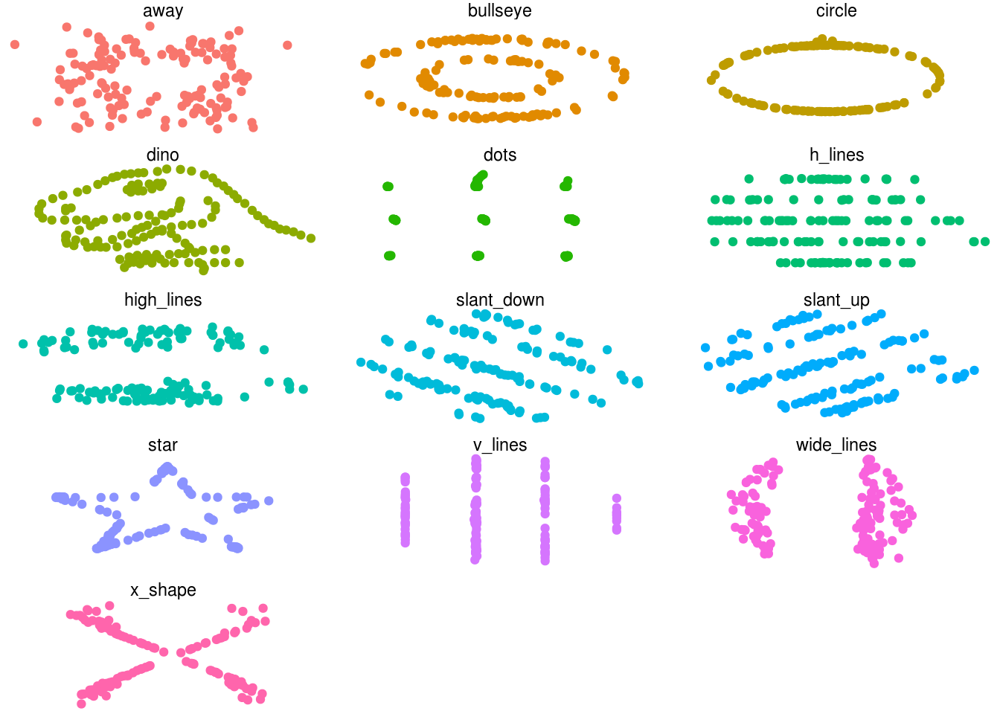
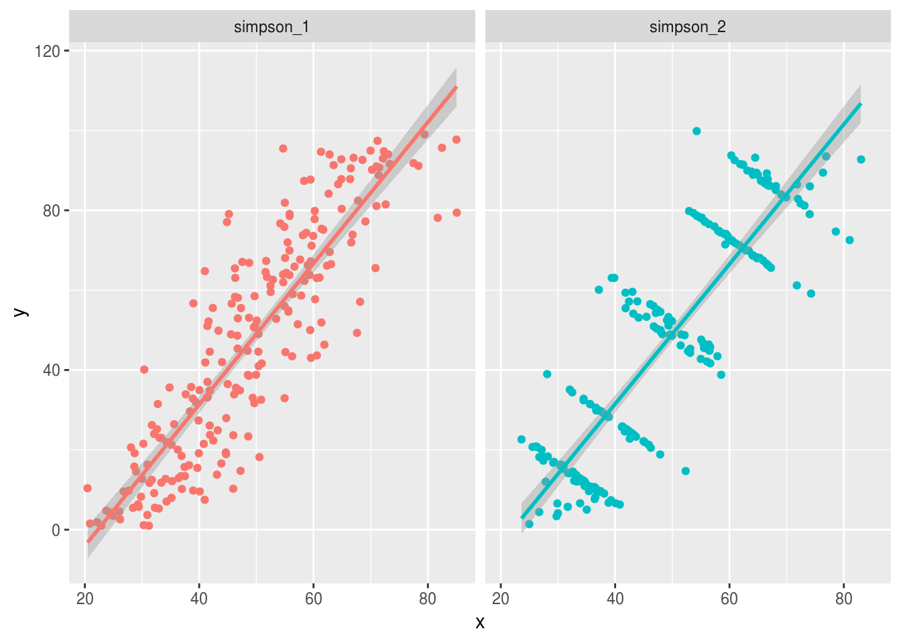

Lesson objectives
- Learn how to apply and interpret linear regression for a variety of data
- Understand probability and the importance of presenting confidence intervals
- Learn the importance of visualizing your data when doing any analyses or statistics
Lesson outline
- Statistics and probability (5 min)
- Generalized linear models (40-50 min)
- Linear regression
- Logistic regression
- Confidence intervals and p-values (15-20 min)
- Importance of visualization (20 min)
Setup
install.packages("dplyr")# ortidyverseinstall.packages("tidyr")# ortidyverseinstall.packages("broom")install.packages("datasauRus")
## ── Attaching packages ────────────────────────────────── tidyverse 1.2.1 ──## ✔ ggplot2 3.0.0 ✔ purrr 0.2.5
## ✔ tibble 1.4.2 ✔ dplyr 0.7.6
## ✔ tidyr 0.8.1 ✔ stringr 1.3.1
## ✔ readr 1.1.1 ✔ forcats 0.3.0## ── Conflicts ───────────────────────────────────── tidyverse_conflicts() ──
## ✖ dplyr::filter() masks stats::filter()
## ✖ dplyr::lag() masks stats::lag()Theoretical models are powerful tools for explaining and understanding the world. However, they are limited in that the real-world often doesn’t perfectly fit these models. The real world is messy and noisy. We can’t always blindly trust our data as there are inherent biases and errors in it. Measuring it, collecting it, recording it, and inputting it are some of the possible sources of error and bias. We use statistics and probability to determine whether the way we understand and conceptualize the world (as models) matches reality (even with the error and bias).
A reason we use statistical methods in R compared to writing up the formulas and equations ourselves is that we can focus on answering questions without worrying about whether we are doing the math or computation wrong. This is of course dependent on the type of research questions you may be interested in (e.g. for more theoretical questions, doing the math and computation yourself is probably a goal!) and on the type of data you are using/collecting. There is a lot of complexity that has already been taken care of in the available R packages and functions. For example, the function glm that we will use in this lesson takes a maximum likelihood-based approach to estimation, which is a complex method for determining fit (like the least squares method of fitting you did in the previous lesson). That way, you can answer your research questions and not worry too much about the exact math involved and instead worry about the specifics of your field (e.g. Are you measuring the right thing? Are you collecting the right data? Are you asking the right questions? Is there an ecological or biological aspect you are missing in your analysis?)
Generalized linear models (or GLM) is a family of statistical modelling techniques, that can also be used in place of several other techniques, e.g. correlation or analysis of variance (ANOVA), linear regression, logistic regression. GLM is a powerful technique that you can use on a wide range of data and research questions, and is the foundation for understanding how more advanced techniques work. This is the reason I will be covering GLM in depth. (For those who will go into graduate studies or into research in general, you will likely use mixed effects models. If you can understand and grasp GLM, it will be substantially easier for you to understand mixed effects modelling and other techniques.)
A version of GLM that uses continuous \(y\) values is called linear regression, which I’m going to focus on. The formula for linear regression (or GLM in general) is:
\[ Y = \alpha + X\beta + \varepsilon \]
Or, a simplified, alphabetized version is:
\[ y = a + Xb + e \]
Where \(a\) is the intercept, \(X\) is the variable (or as a matrix of all variables), \(b\) is the slope/coefficient, and \(e\) is the error term. In the case of multiple linear regression (more than one \(x\)), it is expanded to:
\[ y = a + x_1b_1 + x_2b_2 +...+ x_nb_n + e \]
Where each \(x_n\) is a variable (either continuous or categorical) in a data frame and \(b_n\) is the variable coefficient/slope.
We construct these regression models for several reasons. Sometimes we want to infer how some variables (\(x\)) cause or influence another variable (\(y\)). Or maybe we know that \(y\) has a lot of error in the measurement or is difficult to measure, so we want to derive a formula in order to predict \(y\) based on more accurately measured variables. In R we can run linear regression either using lm or using glm. We’ll use glm since it can be expanded to other types of analyses. First, let’s load up a dataset.
## Parsed with column specification:
## cols(
## record_id = col_integer(),
## month = col_integer(),
## day = col_integer(),
## year = col_integer(),
## plot_id = col_integer(),
## species_id = col_character(),
## sex = col_character(),
## hindfoot_length = col_integer(),
## weight = col_integer(),
## genus = col_character(),
## species = col_character(),
## taxa = col_character(),
## plot_type = col_character()
## )Now, let’s fit a model to the data. Let’s say we want to see the role that sex has on hindfoot length in various species in the portal dataset. (gaussian is stating that hindfoot_length is a continuous variable and that you assume the error terms have a Gaussian, or normal, distribution.)
##
## Call:
## glm(formula = hindfoot_length ~ sex, family = gaussian, data = portal)
##
## Deviance Residuals:
## Min 1Q Median 3Q Max
## -27.710 -8.710 2.290 7.163 35.163
##
## Coefficients:
## Estimate Std. Error t value Pr(>|t|)
## (Intercept) 28.83678 0.07826 368.469 < 2e-16 ***
## sexM 0.87280 0.10799 8.082 6.58e-16 ***
## ---
## Signif. codes: 0 '***' 0.001 '**' 0.01 '*' 0.05 '.' 0.1 ' ' 1
##
## (Dispersion parameter for gaussian family taken to be 91.22251)
##
## Null deviance: 2867427 on 31369 degrees of freedom
## Residual deviance: 2861468 on 31368 degrees of freedom
## (3416 observations deleted due to missingness)
## AIC: 230610
##
## Number of Fisher Scoring iterations: 2There’s a lot of results and information contained within fit1, which summary() extracts and presents in a fairly nice format. However, a lot of this information we aren’t really interested in. So let’s extract only what we want, using the broom package. (get it, broom to clean up?)
## # A tibble: 2 x 5
## term estimate std.error statistic p.value
## <chr> <dbl> <dbl> <dbl> <dbl>
## 1 (Intercept) 28.8 0.0783 368. 0.
## 2 sexM 0.873 0.108 8.08 6.58e-16Much nicer! Ok, so what does this actually mean? Let’s go back to the equation and convert the above into the formula:
\[ hindfoot\_length = Intercept + (sexM \times b) \]
Let’s substitute in the numbers. The intercept, is well, the intercept in the data above. The \(b\) is the estimate for sex.
\[ hindfoot\_length = 28.836 + (sexM \times 0.872) \]
We can use this equation to estimate the value of hindfoot length for a specific sex. But first, let’s make sure this is working correctly. Let’s find out the mean hindfoot length by sex.
portal %>%
filter(!is.na(sex)) %>%
group_by(sex) %>%
summarize(mean_hfl = mean(hindfoot_length, na.rm = TRUE)) ## # A tibble: 2 x 2
## sex mean_hfl
## <chr> <dbl>
## 1 F 28.8
## 2 M 29.7Ok, let’s compare to the equation. The variable sexM is 1 for male and 0 for female. So if we want to calculate the hindfoot length of female, we have to set sexM as 0 in the equation. Let’s do it:
## [1] 28.836Same as above! And for males (equal to 1):
## [1] 29.708Good, it matches what we calculated. Why is this useful? Well, we can add more terms to the GLM equation. This allows us to determine how a variable influences \(y\) when other variables are held constant and is known as multiple linear regression. Since hindfoot length is probably also dependent on weight, let’s add that to the model and put the values into the equation.
## # A tibble: 3 x 5
## term estimate std.error statistic p.value
## <chr> <dbl> <dbl> <dbl> <dbl>
## 1 (Intercept) 21.2 0.0738 287. 0.
## 2 sexM 0.799 0.0795 10.1 9.38e-24
## 3 weight 0.183 0.00111 164. 0.\[ hindfoot\_length = 21.157 + (sexM \times 0.799) + (weight \times 0.183)\]
So if we wanted to know what the hindfoot length would be for a female of 50 weight:
## [1] 30.307Sometimes, depending on the research question, we want to be able to see the predicted \(y\) based on a single variable after removing the other variables. To remove a variable you set it to zero, but a zero weight of an animal doesn’t make sense. It doesn’t exist! So, we can transform the data so that zero is possible. There are many ways to transform data, but one way that is often used is to mean center the data. Mean centering is subtracting each value by the mean. After mean centering, 0 is equal to the mean of the variable. So let’s do that to weight.
portal2 <- portal %>%
mutate(wt_center = weight - mean(weight, na.rm = TRUE))
# You can also use `scale`
# mutate(wt_center = scale(weight, scale = FALSE))
fit3 <- glm(hindfoot_length ~ sex + wt_center, data = portal2)
tidy(fit3)## # A tibble: 3 x 5
## term estimate std.error statistic p.value
## <chr> <dbl> <dbl> <dbl> <dbl>
## 1 (Intercept) 29.0 0.0576 503. 0.
## 2 sexM 0.799 0.0795 10.1 9.38e-24
## 3 wt_center 0.183 0.00111 164. 0.\[ hindfoot\_length = 28.96 + (sexM \times 0.8) + (wt\_center \times 0.18)\]
Much better. So if we wanted to compare males vs females who have a mean weight (set to 0):
## [1] 28.96## [1] 29.76Or if we wanted to see males with weight 10 g minus the mean vs 10 g plus the mean:
## [1] 27.96## [1] 31.56challenge1 that keeps only taxa of “Rodent” (filter) and with a new column (mutate) called “Dipodomys” where if genus is equal to “Dipodomys” than the value is “Yes” and if not the value is “No” (hint: use ifelse). Then, create a model using glm called fit_challenge1 that has the terms hindfoot_length (as \(y\)), sex, wt_center, and Dipodomys. Extract the relevant information from the model using tidy. What is the hindfoot length when sex is female, weight is 5 above the mean, and Dipodomys is yes?# Solution
challenge1 <- portal2 %>%
filter(taxa == "Rodent") %>%
mutate(Dipodomys = ifelse(genus == "Dipodomys", "Yes", "No"))
fit_challenge1 <- glm(hindfoot_length ~ sex + wt_center + Dipodomys, data = challenge1)
tidy(fit_challenge1)## # A tibble: 4 x 5
## term estimate std.error statistic p.value
## <chr> <dbl> <dbl> <dbl> <dbl>
## 1 (Intercept) 22.9 0.0289 794. 0
## 2 sexM -0.0647 0.0334 -1.94 0.0527
## 3 wt_center 0.116 0.000498 234. 0
## 4 DipodomysYes 13.5 0.0357 379. 0## [1] 37Disease with (random) values as either 0 for “Healthy” or 1 for “Diseased”. Then, write up a formula using glm to analyze the role that weight, sex, and hindfoot length (not mean centered) has on disease status. Because the \(y\) is not continuous, you need to set family = binomial in glm. Run the code, check the summary (or tidy), put the numbers into an equation (as we did above), and try to interpret the results (where sex is female, weight is 50, and hindfoot length is 30).# So random numbers is the same for everyone
set.seed(1002)
challenge2 <- portal %>%
# rbinom randomly creates values for binary data.
mutate(Disease = rbinom(nrow(.), 1, 0.25))# Solution
fit_challenge2 <- glm(Disease ~ weight + sex + hindfoot_length,
data = challenge2, family = binomial)
summary(fit_challenge2)##
## Call:
## glm(formula = Disease ~ weight + sex + hindfoot_length, family = binomial,
## data = challenge2)
##
## Deviance Residuals:
## Min 1Q Median 3Q Max
## -0.7780 -0.7700 -0.7609 1.6406 1.6960
##
## Coefficients:
## Estimate Std. Error z value Pr(>|z|)
## (Intercept) -1.0351924 0.0467550 -22.141 <2e-16 ***
## weight -0.0003031 0.0005085 -0.596 0.551
## sexM -0.0338419 0.0263049 -1.287 0.198
## hindfoot_length -0.0004350 0.0018926 -0.230 0.818
## ---
## Signif. codes: 0 '***' 0.001 '**' 0.01 '*' 0.05 '.' 0.1 ' ' 1
##
## (Dispersion parameter for binomial family taken to be 1)
##
## Null deviance: 34757 on 30675 degrees of freedom
## Residual deviance: 34754 on 30672 degrees of freedom
## (4110 observations deleted due to missingness)
## AIC: 34762
##
## Number of Fisher Scoring iterations: 4## # A tibble: 4 x 5
## term estimate std.error statistic p.value
## <chr> <dbl> <dbl> <dbl> <dbl>
## 1 (Intercept) -1.04 0.0468 -22.1 1.28e-108
## 2 weight -0.000303 0.000509 -0.596 5.51e- 1
## 3 sexM -0.0338 0.0263 -1.29 1.98e- 1
## 4 hindfoot_length -0.000435 0.00189 -0.230 8.18e- 1## [1] -1.062Logistic regression is a technique that has the \(y\) as a binary or categorical variable (e.g. female vs male, mammal vs plant vs bacteria). We won’t be covering this in too much detail, but I will go over it to highlight the flexibility that GLM has in handling different types of data.
The reason why the result of the challenge two above was difficult to interpret was because there’s a bit more to logistic regression then with linear regression. It becomes clearer when we look at the formula:
\[ logit(p) = \ln\left(\frac{P(y=1)}{P(y=0)}\right) = a + Xb + e\]
In this case, the \(y\) is the logged odds of the event occurring (in the challenge the event was disease). In order to interpret the model results, we need to exponentiate both sides of the equation.
\[ \exp\left(\ln\left(\frac{p}{1 - p}\right)\right) = \exp(a + Xb + e)\] \[ \frac{p}{1 - p} = e^{a + Xb + e}\]
where \(p\) is the probability of the event (equal to 1, in this case of disease). So if we exponentiate the estimates, and solve for the formula, we can interpret the result as the odds of an event occurring.
## [1] 0.3457636In this case, for a female with a weight of 50 and hindfoot of 30, the probability of disease is 0.345, or 34%. Interpretation actually gets a bit more complicated than that depending on what you want to look at. So depending on your final project, if you need/want to use this, we can help walk you through this more.
So what’s the point of using glm? Not only does it create a model with coefficients and the magnitude (effect size), but it is also used to calculate how certain we are about the results. The main power of GLM comes from the ability to estimate model parameters and derive meaning from how certain \(x\) variables (independent variables) influence the \(y\) (dependent variable). We can use this model to predict what could happen to some value if we knew or could change the independent variables (\(x\)). But we also want to know whether this model reflects reality.
From GLM we can determine the confidence (or rather, the uncertainty) we have about the beta (\(b\)) estimates. In the case of linear regression model, we can use tidy with the conf.int argument to calculate the confidence interval. In the default case, this calculates the 95% confidence interval, or rather we are 95% certain that the estimate lies in this range.
fit_wt <- glm(hindfoot_length ~ weight, data = portal)
tidy(fit_wt, conf.int = TRUE) %>%
select(term, estimate, conf.low, conf.high, p.value)## # A tibble: 2 x 5
## term estimate conf.low conf.high p.value
## <chr> <dbl> <dbl> <dbl> <dbl>
## 1 (Intercept) 21.6 21.4 21.7 0
## 2 weight 0.183 0.181 0.185 0In this case, the uncertainty of the estimate for hindfoot length is between 2.524 to 2.58, which is pretty narrow (that’s a good thing). This tells us that the estimate that hindfoot length influences weight is probably reflective of reality. That makes sense since longer hindfeet mean there is more space and amount of area for more flesh to attach to and that there is more bone, which adds weight. We can also be more strict about our uncertainty (counter-intuitively, a larger confidence interval is more strict).
# Confidence interval of 99%
tidy(fit_wt, conf.int = TRUE, conf.level = 0.99) %>%
select(term, estimate, conf.low, conf.high, p.value)## # A tibble: 2 x 5
## term estimate conf.low conf.high p.value
## <chr> <dbl> <dbl> <dbl> <dbl>
## 1 (Intercept) 21.6 21.4 21.7 0
## 2 weight 0.183 0.180 0.186 0We can also expand the model to include more terms.
fit_wtsex <- glm(hindfoot_length ~ weight + sex, data = portal)
tidy(fit_wtsex, conf.int = TRUE) %>%
select(term, estimate, conf.low, conf.high, p.value)## # A tibble: 3 x 5
## term estimate conf.low conf.high p.value
## <chr> <dbl> <dbl> <dbl> <dbl>
## 1 (Intercept) 21.2 21.0 21.3 0.
## 2 weight 0.183 0.181 0.185 0.
## 3 sexM 0.799 0.644 0.955 9.38e-24Great! In almost all cases, you should favour confidence intervals and estimation over the p-value. In some parts of science (especially biomedical research), p-values are ubiquitous. But, there is a major problem with p-values. What does the p-value mean?
P-values are based on and used in hypothesis testing. Hypothesis testing is when you ask a question such as “Are males heavier than females in rodents?”. There is then the null hypothesis (“females and males weigh the same”) and the alternative hypothesis (“males are heavier than females”). Using statistical tests, we can calculate the p-value to give us an indication of which hypothesis is true. Traditionally, if the p-value is <0.05 you ‘reject’ the null hypothesis. This cut off is completely arbitrary.
However, the true meaning of the p-value is a bit counter-intuitive. The p-value is the probability of getting a result that is the same as or more extreme as what you are getting given the null hypothesis is true. There is nothing in that statement that says the alternate hypothesis is true… This is important because often researchers use the p-value to say that their hypothesis is true or that the p-value is the probability their hypothesis (and thus reality) is true. But that is not at all the case! This is why the use of p-values should be minimized as much as possible and to instead use estimation and confidence intervals.
The other thing with p-values is that they are ‘unstable’/‘unreliable’… meaning they can change with even just slight differences in the data. Let’s do a demonstration:
num_tests <- 100
sample_size <- 100
actual_difference <- 0
variability <- 1
p.values <- sapply(1:num_tests, function(x) {
x <- rnorm(sample_size, mean = 0,
sd = variability)
y <- rnorm(sample_size, mean = 0 + actual_difference,
sd = variability)
tidy(t.test(x, y))[['p.value']]
})
qplot(y = p.values) +
geom_hline(yintercept = 0.05)
As you can see, we know that x and y are the same (both have a mean of 0 and standard deviation of 1). And yet, there are still ~6 or so (below the line) tests that show a “significant” difference between x and y! Which makes sense, since a p-value of 0.05 equals a 5% chance you will see another similar result if the null hypothesis were true. Confusing eh?
sample_size to 10sample_size to 500num_tests to 1000num_tests to 10actual_difference to 0.25actual_difference to 1variability to 0.5variability to 3Visualizing your data before, during, and after doing statistics or modelling your data is an incredibly important and sometimes overlooked aspect of data analysis. Sometimes statistics and modelling give you an answer that you sort of expect, but the actual data is telling a different story.
There are several datasets found within the datasauRus package. This package is trying to illustrate a point. First, let’s look at the mean and standard deviation of the variables in each dataset:
datasaurus_dozen %>%
group_by(dataset) %>%
summarise(
mean_x = mean(x),
sd_x = sd(x),
mean_y = mean(y),
sd_y = sd(y)
)## # A tibble: 13 x 5
## dataset mean_x sd_x mean_y sd_y
## <chr> <dbl> <dbl> <dbl> <dbl>
## 1 away 54.3 16.8 47.8 26.9
## 2 bullseye 54.3 16.8 47.8 26.9
## 3 circle 54.3 16.8 47.8 26.9
## 4 dino 54.3 16.8 47.8 26.9
## 5 dots 54.3 16.8 47.8 26.9
## 6 h_lines 54.3 16.8 47.8 26.9
## 7 high_lines 54.3 16.8 47.8 26.9
## 8 slant_down 54.3 16.8 47.8 26.9
## 9 slant_up 54.3 16.8 47.8 26.9
## 10 star 54.3 16.8 47.8 26.9
## 11 v_lines 54.3 16.8 47.8 26.9
## 12 wide_lines 54.3 16.8 47.8 26.9
## 13 x_shape 54.3 16.8 47.8 26.9They’re all basically the same… What about for linear regression? (lm is the same as glm with family gaussian.)
# Linear regression on each dataset
datasaurus_dozen %>%
group_by(dataset) %>%
do(tidy(lm(y ~ x, data = .))[2, ])## # A tibble: 13 x 6
## # Groups: dataset [13]
## dataset term estimate std.error statistic p.value
## <chr> <chr> <dbl> <dbl> <dbl> <dbl>
## 1 away x -0.103 0.135 -0.760 0.448
## 2 bullseye x -0.110 0.135 -0.813 0.417
## 3 circle x -0.110 0.135 -0.811 0.419
## 4 dino x -0.104 0.136 -0.764 0.446
## 5 dots x -0.0969 0.135 -0.715 0.476
## 6 h_lines x -0.0992 0.136 -0.732 0.466
## 7 high_lines x -0.110 0.135 -0.812 0.418
## 8 slant_down x -0.111 0.135 -0.818 0.415
## 9 slant_up x -0.110 0.135 -0.814 0.417
## 10 star x -0.101 0.135 -0.746 0.457
## 11 v_lines x -0.112 0.135 -0.824 0.412
## 12 wide_lines x -0.107 0.135 -0.789 0.431
## 13 x_shape x -0.105 0.135 -0.778 0.438Same thing, all are more or less the same. But, there is something seriously wrong with every since one of the datasets. Pair up and explore the data visually to see what’s going on. Can you see it?
# Solution
ggplot(datasaurus_dozen, aes(x = x, y = y, colour = dataset)) +
geom_point() +
theme_void() +
theme(legend.position = "none") +
facet_wrap(~ dataset, ncol = 3)
From what you found in the challenge above, can you see why it’s dangerous to not visualize the data first? Sometimes just visualizing the data can give you greater insight into the data and meaning than any statistical or mathematical model can provide. (For a real-world example of this, check out this article on the discoveries physicists made when they created a visualization of a black hole based on the math when making the movie Interstellar).
But even the type of graph you use can hide data. Check out the figure below for an example of that. In general, it’s better to visualize the raw data points, but this quickly becomes a problem as you get more data.
Visualizing raw data vs aggregate. From this source
Another example is known as Simpson’s Paradox. You all have already encountered Simpson’s Paradox in the challenges of lecture 4 and 5, where the average weight of all species decreased over time, but for each species weight remained constant. These types of problems are encountered all the time in data analysis and it is part of what makes science so hard, because data often doesn’t behave as we expect it to. The figure below illustrates Simpson’s Paradox.
ggplot(simpsons_paradox, aes(x = x, y = y, colour = dataset)) +
geom_point() +
geom_smooth(method = "lm") +
theme(legend.position = "none") +
facet_wrap( ~ dataset, ncol = 3)
And sometimes, by not looking at the raw data, it can lead to actual harm. For instance, Simpson’s paradox comes up in medical studies of drugs that could be lifesaving for a patient. If inappropriate conclusions are drawn because the data wasn’t completely explored, people could be harmed or could die. This is true in any scientific field, including ecology. Policies aimed at benefiting the environment could in fact be harming it because these types of things were not examined.
This work is licensed under a Creative Commons Attribution 4.0 International License. See the licensing page for more details about copyright information.
{kind=link}